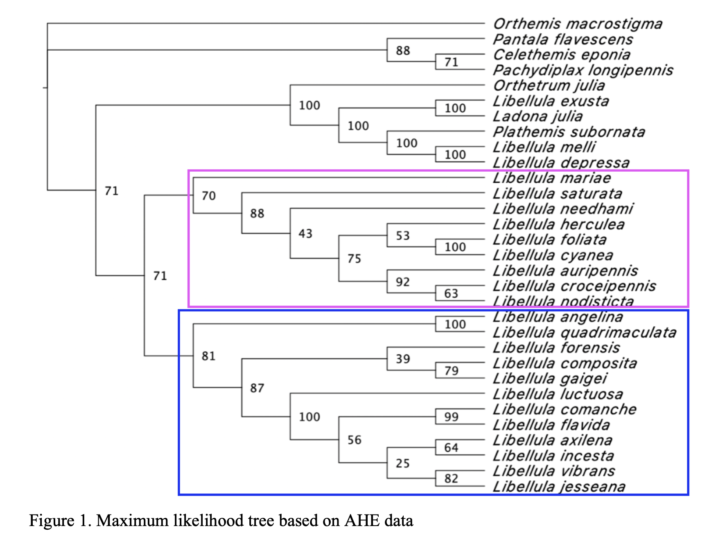
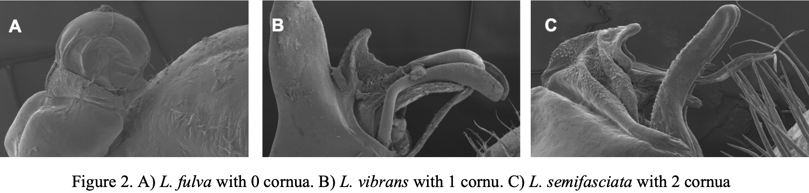

Odonata is a diverse order of insects comprising over 6000 species of dragonflies and damselflies (Kohli, 2021). Due to their status of being among the oldest known insects as well as their charismatic coloring and behavior, odonates have been of interest to scientists since the 16th century (May, 2019). Pioneered by Linnaeus in the mid-1700s, scientists began describing odonates using morphological characters such as wing venation (Carle, 2002). During this era, many newly described dragonflies were placed into the genus Libellula, with the genus essentially becoming a taxonomic dumping ground (May, 2019). As methods for morphological studies advanced and molecular phylogenetics became more common, Libellula has been redefined numerous times, with new species described and many species formerly in Libellula placed into different genera or synonymized.
This complicated taxonomic history is still not resolved as current literature on the evolutionary history of Libellula presents numerous, often conflicting, hypotheses. These taxonomic confusions could be the result of relying solely on morphological characters prone to convergent evolution, such as wing venation, to inform phylogenies (Ware et al., 2007). However, multiple other factors can influence the outcome of a phylogenetic construction including gene choice, alignment method, and optimality criterion (Ballare and Ware, 2011). Previously, studies have utilized the 16S rRNA gene (eg Artiss et al., 2001; Kambhamptati and Charlton, 1999; and Ware et al., 2007), 28S rRNA gene (eg Ware et al., 2007), and cytochrome oxidase I (COI) gene (eg Artiss et al., 2001) to gather molecular data for phylogenetic construction. Currently, there is no consensus on which gene produces the most accurate phylogenies (Ballare and Ware, 2011). However, a study by Artiss et al. (2001) provides evidence that the 16S gene was more informative for basal relationships within Libellula whereas the COI gene was more informative for recent relationships. Thus, multigene approaches are favored by some scientists, like Artiss and Ware, as they generally result in better-supported trees (Artiss et al., 2001). Our study aims to resolve the uncertainties within Libellula’s evolutionary history including the placement of Ladona and Plathemis.

